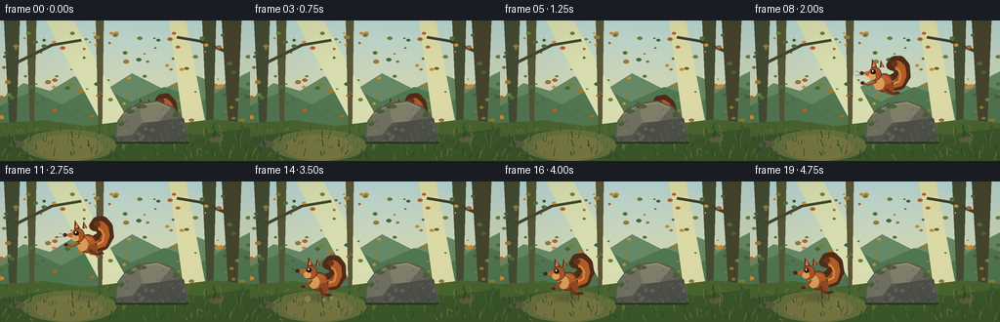
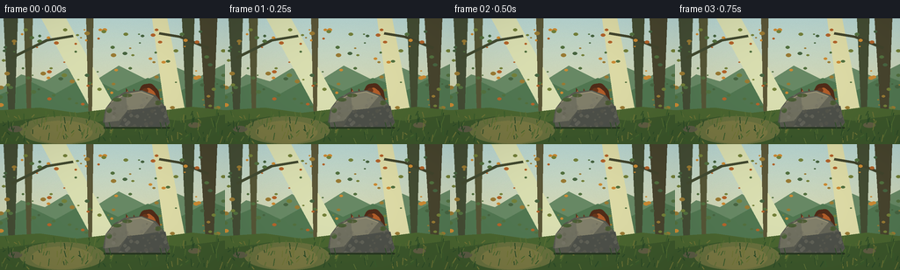

CODING AGENTS AS PIXEL WORLD MODELS
traex/GPT-5.6-Sol · dynamic_spatial_relationship_0023
点击播放 · 原生 RGB 像素
逐轮保存的候选
回放视频、检查图与代码变化。
每份候选均可单独播放。实际图片检查记录在下方工具轨迹中。
候选 01播放与检查图
点击播放 · 原生 RGB 像素


展开代码变化
--- 上一保存版本
+++ 本次保存版本
@@ -0,0 +1,225 @@
+from pathlib import Path
+import math
+import numpy as np
+from PIL import Image, ImageDraw, ImageFilter
+import artifact_io
+
+W,H,N = 256,144,20
+S=3
+rng=np.random.default_rng(23)
+
+# fixed natural texture particles
+far_leaves=[]
+for _ in range(115):
+ x=int(rng.integers(0,W)); y=int(rng.integers(12,105)); r=float(rng.uniform(.5,2.1))
+ c=rng.choice([(83,113,63),(116,129,58),(154,123,52),(179,100,43),(204,139,52),(72,101,65)])
+ far_leaves.append((x,y,r,tuple(c)))
+grass=[]
+for _ in range(180):
+ x=int(rng.integers(0,W)); y=int(rng.integers(111,144)); hh=int(rng.integers(2,11)); lean=int(rng.integers(-3,4))
+ c=rng.choice([(43,74,39),(57,91,44),(77,105,48),(91,111,53),(112,117,54)])
+ grass.append((x,y,hh,lean,tuple(c)))
+rock_specks=[]
+for _ in range(70):
+ # sample in rough rock bounding region; clipped visually using mask later
+ rock_specks.append((int(rng.integers(121,194)),int(rng.integers(85,126)),int(rng.integers(1,3)),int(rng.integers(-18,20))))
+
+def sc(v): return int(round(v*S))
+def ellipse(d, box, fill, outline=None, width=1):
+ d.ellipse(tuple(sc(v) for v in box), fill=fill, outline=outline, width=sc(width) if outline else 1)
+def polygon(d, pts, fill): d.polygon([(sc(x),sc(y)) for x,y in pts], fill=fill)
+def line(d, pts, fill, width=1): d.line([(sc(x),sc(y)) for x,y in pts], fill=fill, width=sc(width), joint='curve')
+
+def draw_background(t):
+ # painted dawn woodland gradient
+ yy=np.linspace(0,1,H*S)[:,None,None]
+ top=np.array([185,215,211.],float); bottom=np.array([231,212,150.],float)
+ arr=np.tile(top*(1-yy)+bottom*yy,(1,W*S,1))
+ # subtle static paper-like grain
+ noise=np.random.default_rng(104).normal(0,1.7,(H*S,W*S,1))
+ arr=np.clip(arr+noise,0,255).astype(np.uint8)
+ im=Image.fromarray(arr,'RGB'); d=ImageDraw.Draw(im)
+ # hazy distant hills
+ polygon(d,[(0,81),(24,64),(51,72),(76,57),(105,73),(135,54),(167,70),(198,55),(226,67),(256,52),(256,114),(0,114)],(104,137,101))
+ polygon(d,[(0,87),(34,72),(63,86),(99,66),(134,83),(168,68),(207,82),(238,65),(256,72),(256,116),(0,116)],(81,119,81))
+ # shafts of light
+ polygon(d,[(47,0),(75,0),(135,109),(106,109)],(218,223,177))
+ polygon(d,[(173,0),(190,0),(211,109),(188,109)],(222,220,167))
+ # distant trunks
+ for x,w,col in [(12,8,(68,77,53)),(32,5,(86,87,55)),(214,7,(68,77,51)),(237,10,(72,69,46)),(102,4,(91,87,56))]:
+ polygon(d,[(x-w,0),(x+w,0),(x+w*.55,112),(x-w*.3,112)],col)
+ # branches
+ line(d,[(13,45),(53,25),(83,20)],(67,75,49),3)
+ line(d,[(237,34),(205,21),(181,17)],(66,69,45),3)
+ for x,y,r,c in far_leaves:
+ ellipse(d,(x-r*1.5,y-r,x+r*1.5,y+r),c)
+ # ground
+ polygon(d,[(0,105),(45,102),(87,108),(129,103),(180,106),(218,101),(256,105),(256,144),(0,144)],(74,101,48))
+ polygon(d,[(0,120),(51,112),(103,120),(154,110),(203,117),(256,110),(256,144),(0,144)],(60,87,43))
+ # path/light patch left for landing readability
+ ellipse(d,(22,112,119,144),(104,112,62))
+ ellipse(d,(35,117,105,143),(121,120,67))
+ # little ground stones
+ ellipse(d,(9,123,25,130),(91,91,68)); ellipse(d,(214,119,228,125),(96,94,67))
+ # grass strokes, subtle tiny sway in upper tips
+ sway=math.sin(t*0.65)*.7
+ for x,y,hh,lean,c in grass:
+ line(d,[(x,y),(x+lean+sway,y-hh)],c,1)
+ return im
+
+def draw_shadow(im,x,y,rx,alpha=70):
+ ov=Image.new('RGBA',im.size,(0,0,0,0)); d=ImageDraw.Draw(ov)
+ ellipse(d,(x-rx,y-2,x+rx,y+3),(25,39,22,alpha))
+ ov=ov.filter(ImageFilter.GaussianBlur(sc(2)))
+ im.paste(ov,(0,0),ov)
+
+def draw_squirrel_sprite(scale=1.0, airborne=False, crouch=0.0, blink=False, phase=0.0):
+ # local sprite faces left. Anchor at body center (0,0), feet near y=15.
+ sz=100*S
+ sp=Image.new('RGBA',(sz,sz),(0,0,0,0)); d=ImageDraw.Draw(sp)
+ C=sz//2
+ def P(x,y): return (C+sc(x*scale), C+sc(y*scale))
+ def E(box,fill,outline=None,w=1):
+ x0,y0,x1,y1=box
+ d.ellipse((C+sc(x0*scale),C+sc(y0*scale),C+sc(x1*scale),C+sc(y1*scale)),fill=fill,outline=outline,width=max(1,sc(w*scale)))
+ def Poly(pts,fill): d.polygon([P(x,y) for x,y in pts],fill=fill)
+ def L(pts,fill,w): d.line([P(x,y) for x,y in pts],fill=fill,width=max(1,sc(w*scale)),joint='curve')
+ # Large curled tail behind body: a thick, tapering sequence creates a fluffy S curl.
+ tail_pts=[(11,5),(23,2),(29,-9),(27,-21),(20,-28),(12,-27),(9,-21),(16,-20),(20,-14),(18,-8),(10,-3)]
+ L(tail_pts,(80,44,25,255),12)
+ L([(11,4),(22,0),(25,-10),(23,-19),(18,-23),(13,-22)],(177,93,42,255),9)
+ L([(13,2),(21,-2),(22,-10),(19,-16),(15,-18)],(218,130,61,255),3)
+ # tail tip
+ E((9,-27,17,-20),(102,54,28,255))
+ # rear leg/body
+ E((-9,-10,14,13+crouch*3),(132,68,33,255),(75,42,28,255),1)
+ E((-5,-8,11,10),(180,92,40,255))
+ # creamy belly
+ E((-10,-5,3,11),(218,157,91,255))
+ # haunch
+ E((3,2,15,15),(146,72,33,255))
+ # hind leg changes pose during flight
+ if airborne:
+ L([(5,9),(13,14),(20,13)],(104,54,30,255),4)
+ E((17,11,23,14),(79,45,28,255))
+ else:
+ L([(4,9),(8,16),(16,17)],(108,55,29,255),4)
+ E((13,15,21,18),(77,43,26,255))
+ # forelegs reaching left in jump, tucked at rest
+ if airborne:
+ L([(-7,1),(-17,6),(-24,4)],(151,76,34,255),3)
+ E((-27,2,-22,6),(79,43,26,255))
+ else:
+ L([(-7,1),(-12,9),(-17,10)],(151,76,34,255),3)
+ E((-19,9,-14,12),(78,43,26,255))
+ # neck and head
+ E((-18,-17,-2,0),(171,84,36,255),(78,43,28,255),1)
+ # pointed muzzle facing left
+ Poly([(-17,-12),(-27,-8),(-17,-4),(-10,-8)],(188,101,48,255))
+ E((-29,-10,-24,-6),(61,36,27,255))
+ # ears, dark rim then inner
+ Poly([(-15,-15),(-15,-27),(-8,-18)],(91,48,29,255))
+ Poly([(-14,-17),(-13,-24),(-10,-18)],(211,132,76,255))
+ Poly([(-5,-17),(-4,-26),(1,-18)],(94,48,28,255))
+ Poly([(-3,-18),(-3,-23),(-1,-18)],(211,128,72,255))
+ # cheek light patch
+ E((-18,-9,-9,-1),(225,161,90,255))
+ # eye and catchlight, blink on one settling frame
+ if blink:
+ L([(-15,-12),(-10,-12)],(37,28,23,255),1)
+ else:
+ E((-15.5,-14,-9.5,-8),(30,25,21,255))
+ E((-14,-13,-12,-11),(255,244,205,255))
+ # whiskers
+ L([(-24,-7),(-34,-10)],(62,51,39,210),.6)
+ L([(-24,-6),(-34,-5)],(62,51,39,190),.6)
+ # body fur accents
+ L([(-1,-8),(4,-4),(8,-5)],(231,132,61,210),1)
+ L([(12,-1),(18,-5),(20,-10)],(238,147,70,220),1)
+ return sp
+
+def paste_squirrel(im,x,y,scale,angle,airborne,crouch,blink,phase):
+ sp=draw_squirrel_sprite(scale,airborne,crouch,blink,phase)
+ if angle:
+ sp=sp.rotate(angle,resample=Image.Resampling.BICUBIC,expand=False)
+ im.paste(sp,(sc(x)-sp.width//2,sc(y)-sp.height//2),sp)
+
+def rock_mask_and_draw(im):
+ # Rock is deliberately foreground, so early squirrel is visibly behind it.
+ layer=Image.new('RGBA',im.size,(0,0,0,0)); d=ImageDraw.Draw(layer)
+ shape=[(117,119),(120,103),(129,91),(142,84),(161,82),(177,88),(187,100),(193,119),(188,126),(121,126)]
+ polygon(d,shape,(86,88,78,255))
+ # facets
+ polygon(d,[(121,103),(130,92),(143,86),(145,105),(135,117),(119,119)],(112,112,96,255))
+ polygon(d,[(143,86),(161,83),(175,89),(163,103),(145,105)],(129,127,106,255))
+ polygon(d,[(145,105),(163,103),(188,100),(192,119),(181,125),(135,123)],(77,80,73,255))
+ polygon(d,[(175,89),(185,99),(163,103)],(102,102,88,255))
+ # top warm light edge
+ line(d,[(126,96),(142,87),(160,84),(174,89)],(164,154,120,255),1)
+ # moss
+ for box in [(128,91,138,95),(139,86,150,90),(121,102,127,108),(176,94,183,99)]:
+ ellipse(d,box,(73,94,53,235))
+ # texture dots constrained roughly by facets (all selected points still masked by compositing mask)
+ mask=layer.getchannel('A')
+ tex=Image.new('RGBA',im.size,(0,0,0,0)); td=ImageDraw.Draw(tex)
+ for x,y,r,v in rock_specks:
+ col=(110+v,109+v,94+v,105)
+ ellipse(td,(x-r,y-r,x+r,y+r),col)
+ tex.putalpha(Image.composite(tex.getchannel('A'),Image.new('L',im.size,0),mask))
+ layer=Image.alpha_composite(layer,tex)
+ im.paste(layer,(0,0),layer)
+ # contact shadow and foreground moss tufts
+ dd=ImageDraw.Draw(im)
+ line(dd,[(118,125),(193,125)],(39,55,33),2)
+ for x in [120,126,184,190]:
+ line(dd,[(x,127),(x-2,119)],(49,81,40),1)
+
+def state(i):
+ # hold, anticipation, jump, landing / settle
+ if i <= 4:
+ # tiny breathing while hidden behind rock
+ return 155,101-math.sin(i*.8)*.5,0.78,0,False,0,False
+ if i == 5:
+ return 154,104,0.80,4,False,1,False
+ if 6 <= i <= 13:
+ p=(i-6)/7
+ q=p*p*(3-2*p)
+ x=151+(72-151)*q
+ ground=99+(99-99)*q
+ y=ground-47*math.sin(math.pi*p)
+ angle=13-25*math.sin(math.pi*p)+5*p
+ return x,y,.82,angle,True,0,False
+ # landing at x ~68 and recover upright
+ k=i-14
+ xs=[69,67,68,68,68,68][k]
+ ys=[101,104,101,100,100,100][k]
+ ang=[-8,5,0,0,0,0][k]
+ return xs,ys,.82,ang,False,(1 if k==1 else 0), (i==18)
+
+frames=[]
+for i in range(N):
+ im=draw_background(i)
+ x,y,scale,ang,air,crouch,blink=state(i)
+ # shadow follows horizontal position; shrinks/fades with altitude
+ groundy=119
+ height=max(0,100-y)
+ draw_shadow(im,x,groundy,14-max(0,height)*.10,alpha=max(24,76-int(height*.8)))
+ # squirrel is rendered behind foreground rock. Once left, it no longer overlaps and reads clearly.
+ paste_squirrel(im,x,y,scale,ang,air,crouch,blink,i)
+ rock_mask_and_draw(im)
+ # landing dust puffs, clearly tied to impact
+ if i in (14,15):
+ d=ImageDraw.Draw(im,'RGBA'); a=110 if i==14 else 55
+ for dx,dy,r in [(-10,0,3),(7,1,2),(14,-1,2)]:
+ ellipse(d,(x+dx-r,120+dy-r,x+dx+r,120+dy+r),(186,170,112,a))
+ # warm vignette and downsample
+ rgb=im.convert('RGB').resize((W,H),Image.Resampling.LANCZOS)
+ ar=np.array(rgb,dtype=np.float32)
+ yy,xx=np.mgrid[0:H,0:W]
+ vig=1-0.10*np.clip(((xx-W/2)/(W*.73))**2+((yy-H/2)/(H*.75))**2,0,1)
+ ar=np.clip(ar*vig[...,None],0,255).astype(np.uint8)
+ frames.append(ar)
+
+frames=np.stack(frames).astype(np.uint8)
+assert frames.shape==(20,144,256,3)
+artifact_io.save(frames,Path(__file__).resolve().parent)
可观测工具轨迹
实际执行的命令与返回图片。
命令 1exit 0
/bin/bash -lc "cat prompt.txt && printf '\\n--- GENERATION_RULES.md ---\\n' && cat GENERATION_RULES.md"
命令 2exit 0
/bin/bash -lc "cat task_spec.json && printf '\\n--- files ---\\n' && find . -maxdepth 2 -type f -printf '%p\\n' | sort"
命令 3exit 0
/bin/bash -lc 'cat artifact_io.py'
命令 4exit 0
/bin/bash -lc "cat > generate.py <<'PY'
from pathlib import Path
import math
import numpy as np
from PIL import Image, ImageDraw, ImageFilter
import artifact_io
W,H,N = 256,144,20
S=3
rng=np.random.default_rng(23)
# fixed natural texture particles
far_leaves=[]
for _ in range(115):
x=int(rng.integers(0,W)); y=int(rng.integers(12,105)); r=float(rng.uniform(.5,2.1))
c=rng.choice([(83,113,63),(116,129,58),(154,123,52),(179,100,43),(204,139,52),(72,101,65)])
far_leaves.append((x,y,r,tuple(c)))
grass=[]
for _ in range(180):
x=int(rng.integers(0,W)); y=int(rng.integers(111,144)); hh=int(rng.integers(2,11)); lean=int(rng.integers(-3,4))
c=rng.choice([(43,74,39),(57,91,44),(77,105,48),(91,111,53),(112,117,54)])
grass.append((x,y,hh,lean,tuple(c)))
rock_specks=[]
for _ in range(70):
# sample in rough rock bounding region; clipped visually using mask later
rock_specks.append((int(rng.integers(121,194)),int(rng.integers(85,126)),int(rng.integers(1,3)),int(rng.integers(-18,20))))
def sc(v): return int(round(v*S))
def ellipse(d, box, fill, outline=None, width=1):
d.ellipse(tuple(sc(v) for v in box), fill=fill, outline=outline, width=sc(width) if outline else 1)
def polygon(d, pts, fill): d.polygon([(sc(x),sc(y)) for x,y in pts], fill=fill)
def line(d, pts, fill, width=1): d.line([(sc(x),sc(y)) for x,y in pts], fill=fill, width=sc(width), joint='curve')
def draw_background(t):
# painted dawn woodland gradient
yy=np.linspace(0,1,H*S)[:,None,None]
top=np.array([185,215,211.],float); bottom=np.array([231,212,150.],float)
arr=np.tile(top*(1-yy)+bottom*yy,(1,W*S,1))
# subtle static paper-like grain
noise=np.random.default_rng(104).normal(0,1.7,(H*S,W*S,1))
arr=np.clip(arr+noise,0,255).astype(np.uint8)
im=Image.fromarray(arr,'RGB'); d=ImageDraw.Draw(im)
# hazy distant hills
polygon(d,[(0,81),(24,64),(51,72),(76,57),(105,73),(135,54),(167,70),(198,55),(226,67),(256,52),(256,114),(0,114)],(104,137,101))
polygon(d,[(0,87),(34,72),(63,86),(99,66),(134,83),(168,68),(207,82),(238,65),(256,72),(256,116),(0,116)],(81,119,81))
# shafts of light
polygon(d,[(47,0),(75,0),(135,109),(106,109)],(218,223,177))
polygon(d,[(173,0),(190,0),(211,109),(188,109)],(222,220,167))
# distant trunks
for x,w,col in [(12,8,(68,77,53)),(32,5,(86,87,55)),(214,7,(68,77,51)),(237,10,(72,69,46)),(102,4,(91,87,56))]:
polygon(d,[(x-w,0),(x+w,0),(x+w*.55,112),(x-w*.3,112)],col)
# branches
line(d,[(13,45),(53,25),(83,20)],(67,75,49),3)
line(d,[(237,34),(205,21),(181,17)],(66,69,45),3)
for x,y,r,c in far_leaves:
ellipse(d,(x-r*1.5,y-r,x+r*1.5,y+r),c)
# ground
polygon(d,[(0,105),(45,102),(87,108),(129,103),(180,106),(218,101),(256,105),(256,144),(0,144)],(74,101,48))
polygon(d,[(0,120),(51,112),(103,120),(154,110),(203,117),(256,110),(256,144),(0,144)],(60,87,43))
# path/light patch left for landing readability
ellipse(d,(22,112,119,144),(104,112,62))
ellipse(d,(35,117,105,143),(121,120,67))
# little ground stones
ellipse(d,(9,123,25,130),(91,91,68)); ellipse(d,(214,119,228,125),(96,94,67))
# grass strokes, subtle tiny sway in upper tips
sway=math.sin(t*0.65)*.7
for x,y,hh,lean,c in grass:
line(d,[(x,y),(x+lean+sway,y-hh)],c,1)
return im
def draw_shadow(im,x,y,rx,alpha=70):
ov=Image.new('RGBA',im.size,(0,0,0,0)); d=ImageDraw.Draw(ov)
ellipse(d,(x-rx,y-2,x+rx,y+3),(25,39,22,alpha))
ov=ov.filter(ImageFilter.GaussianBlur(sc(2)))
im.paste(ov,(0,0),ov)
def draw_squirrel_sprite(scale=1.0, airborne=False, crouch=0.0, blink=False, phase=0.0):
# local sprite faces left. Anchor at body center (0,0), feet near y=15.
sz=100*S
sp=Image.new('RGBA',(sz,sz),(0,0,0,0)); d=ImageDraw.Draw(sp)
C=sz//2
def P(x,y): return (C+sc(x*scale), C+sc(y*scale))
def E(box,fill,outline=None,w=1):
x0,y0,x1,y1=box
d.ellipse((C+sc(x0*scale),C+sc(y0*scale),C+sc(x1*scale),C+sc(y1*scale)),fill=fill,outline=outline,width=max(1,sc(w*scale)))
def Poly(pts,fill): d.polygon([P(x,y) for x,y in pts],fill=fill)
def L(pts,fill,w): d.line([P(x,y) for x,y in pts],fill=fill,width=max(1,sc(w*scale)),joint='curve')
# Large curled tail behind body: a thick, tapering sequence creates a fluffy S curl.
tail_pts=[(11,5),(23,2),(29,-9),(27,-21),(20,-28),(12,-27),(9,-21),(16,-20),(20,-14),(18,-8),(10,-3)]
L(tail_pts,(80,44,25,255),12)
L([(11,4),(22,0),(25,-10),(23,-19),(18,-23),(13,-22)],(177,93,42,255),9)
L([(13,2),(21,-2),(22,-10),(19,-16),(15,-18)],(218,130,61,255),3)
# tail tip
E((9,-27,17,-20),(102,54,28,255))
# rear leg/body
E((-9,-10,14,13+crouch*3),(132,68,33,255),(75,42,28,255),1)
E((-5,-8,11,10),(180,92,40,255))
# creamy belly
E((-10,-5,3,11),(218,157,91,255))
# haunch
E((3,2,15,15),(146,72,33,255))
# hind leg changes pose during flight
if airborne:
L([(5,9),(13,14),(20,13)],(104,54,30,255),4)
E((17,11,23,14),(79,45,28,255))
else:
L([(4,9),(8,16),(16,17)],(108,55,29,255),4)
E((13,15,21,18),(77,43,26,255))
# forelegs reaching left in jump, tucked at rest
if airborne:
L([(-7,1),(-17,6),(-24,4)],(151,76,34,255),3)
E((-27,2,-22,6),(79,43,26,255))
else:
L([(-7,1),(-12,9),(-17,10)],(151,76,34,255),3)
E((-19,9,-14,12),(78,43,26,255))
# neck and head
E((-18,-17,-2,0),(171,84,36,255),(78,43,28,255),1)
# pointed muzzle facing left
Poly([(-17,-12),(-27,-8),(-17,-4),(-10,-8)],(188,101,48,255))
E((-29,-10,-24,-6),(61,36,27,255))
# ears, dark rim then inner
Poly([(-15,-15),(-15,-27),(-8,-18)],(91,48,29,255))
Poly([(-14,-17),(-13,-24),(-10,-18)],(211,132,76,255))
Poly([(-5,-17),(-4,-26),(1,-18)],(94,48,28,255))
Poly([(-3,-18),(-3,-23),(-1,-18)],(211,128,72,255))
# cheek light patch
E((-18,-9,-9,-1),(225,161,90,255))
# eye and catchlight, blink on one settling frame
if blink:
L([(-15,-12),(-10,-12)],(37,28,23,255),1)
else:
E((-15.5,-14,-9.5,-8),(30,25,21,255))
E((-14,-13,-12,-11),(255,244,205,255))
# whiskers
L([(-24,-7),(-34,-10)],(62,51,39,210),.6)
L([(-24,-6),(-34,-5)],(62,51,39,190),.6)
# body fur accents
L([(-1,-8),(4,-4),(8,-5)],(231,132,61,210),1)
L([(12,-1),(18,-5),(20,-10)],(238,147,70,220),1)
return sp
def paste_squirrel(im,x,y,scale,angle,airborne,crouch,blink,phase):
sp=draw_squirrel_sprite(scale,airborne,crouch,blink,phase)
if angle:
sp=sp.rotate(angle,resample=Image.Resampling.BICUBIC,expand=False)
im.paste(sp,(sc(x)-sp.width//2,sc(y)-sp.height//2),sp)
def rock_mask_and_draw(im):
# Rock is deliberately foreground, so early squirrel is visibly behind it.
layer=Image.new('RGBA',im.size,(0,0,0,0)); d=ImageDraw.Draw(layer)
shape=[(117,119),(120,103),(129,91),(142,84),(161,82),(177,88),(187,100),(193,119),(188,126),(121,126)]
polygon(d,shape,(86,88,78,255))
# facets
polygon(d,[(121,103),(130,92),(143,86),(145,105),(135,117),(119,119)],(112,112,96,255))
polygon(d,[(143,86),(161,83),(175,89),(163,103),(145,105)],(129,127,106,255))
polygon(d,[(145,105),(163,103),(188,100),(192,119),(181,125),(135,123)],(77,80,73,255))
polygon(d,[(175,89),(185,99),(163,103)],(102,102,88,255))
# top warm light edge
line(d,[(126,96),(142,87),(160,84),(174,89)],(164,154,120,255),1)
# moss
for box in [(128,91,138,95),(139,86,150,90),(121,102,127,108),(176,94,183,99)]:
ellipse(d,box,(73,94,53,235))
# texture dots constrained roughly by facets (all selected points still masked by compositing mask)
mask=layer.getchannel('A')
tex=Image.new('RGBA',im.size,(0,0,0,0)); td=ImageDraw.Draw(tex)
for x,y,r,v in rock_specks:
col=(110+v,109+v,94+v,105)
ellipse(td,(x-r,y-r,x+r,y+r),col)
tex.putalpha(Image.composite(tex.getchannel('A'),Image.new('L',im.size,0),mask))
layer=Image.alpha_composite(layer,tex)
im.paste(layer,(0,0),layer)
# contact shadow and foreground moss tufts
dd=ImageDraw.Draw(im)
line(dd,[(118,125),(193,125)],(39,55,33),2)
for x in [120,126,184,190]:
line(dd,[(x,127),(x-2,119)],(49,81,40),1)
def state(i):
# hold, anticipation, jump, landing / settle
if i <= 4:
# tiny breathing while hidden behind rock
return 155,101-math.sin(i*.8)*.5,0.78,0,False,0,False
if i == 5:
return 154,104,0.80,4,False,1,False
if 6 <= i <= 13:
p=(i-6)/7
q=p*p*(3-2*p)
x=151+(72-151)*q
ground=99+(99-99)*q
y=ground-47*math.sin(math.pi*p)
angle=13-25*math.sin(math.pi*p)+5*p
return x,y,.82,angle,True,0,False
# landing at x ~68 and recover upright
k=i-14
xs=[69,67,68,68,68,68][k]
ys=[101,104,101,100,100,100][k]
ang=[-8,5,0,0,0,0][k]
return xs,ys,.82,ang,False,(1 if k==1 else 0), (i==18)
frames=[]
for i in range(N):
im=draw_background(i)
x,y,scale,ang,air,crouch,blink=state(i)
# shadow follows horizontal position; shrinks/fades with altitude
groundy=119
height=max(0,100-y)
draw_shadow(im,x,groundy,14-max(0,height)*.10,alpha=max(24,76-int(height*.8)))
# squirrel is rendered behind foreground rock. Once left, it no longer overlaps and reads clearly.
paste_squirrel(im,x,y,scale,ang,air,crouch,blink,i)
rock_mask_and_draw(im)
# landing dust puffs, clearly tied to impact
if i in (14,15):
d=ImageDraw.Draw(im,'RGBA'); a=110 if i==14 else 55
for dx,dy,r in [(-10,0,3),(7,1,2),(14,-1,2)]:
ellipse(d,(x+dx-r,120+dy-r,x+dx+r,120+dy+r),(186,170,112,a))
# warm vignette and downsample
rgb=im.convert('RGB').resize((W,H),Image.Resampling.LANCZOS)
ar=np.array(rgb,dtype=np.float32)
yy,xx=np.mgrid[0:H,0:W]
vig=1-0.10*np.clip(((xx-W/2)/(W*.73))**2+((yy-H/2)/(H*.75))**2,0,1)
ar=np.clip(ar*vig[...,None],0,255).astype(np.uint8)
frames.append(ar)
frames=np.stack(frames).astype(np.uint8)
assert frames.shape==(20,144,256,3)
artifact_io.save(frames,Path(__file__).resolve().parent)
PY
python generate.py
ls -lh pixels.npz inspection.png index.html frames/00.png frames/19.png"命令 5exit 0
/bin/bash -lc "python - <<'PY'
# Report authored motion states for semantic verification.
import ast
src=open('generate.py').read(); tree=ast.parse(src)
# importing regenerates, so duplicate concise expected center report instead
import math
for i in range(20):
if i<=4:x,y=155,101-math.sin(i*.8)*.5
elif i==5:x,y=154,104
elif i<=13:
p=(i-6)/7;q=p*p*(3-2*p);x=151+(72-151)*q;y=99-47*math.sin(math.pi*p)
else:
k=i-14;x=[69,67,68,68,68,68][k];y=[101,104,101,100,100,100][k]
print(f'{i:02d}: center=({x:5.1f},{y:5.1f})')
PY"命令 6exit 0
/bin/bash -lc "python - <<'PY'
import numpy as np
from PIL import Image
from pathlib import Path
fs=sorted(Path('frames').glob('*.png'))
assert len(fs)==20
ims=np.stack([np.array(Image.open(p).convert('RGB')) for p in fs])
assert ims.shape==(20,144,256,3) and ims.dtype==np.uint8
print('frames',ims.shape,ims.dtype)
print('frame mean RGB',np.round(ims.mean((0,1,2)),2))
print('consecutive changed pixels',[(int(np.any(ims[i]"'!=ims[i-1],axis=2).sum())) for i in range(1,20)])
z=np.load('"'pixels.npz')['pixels']
assert z.shape==(144,256,20) and z.dtype==np.uint32
# exact packed check on three frames
for k in (0,10,19):
p=(ims[k,:,:,0].astype(np.uint32)<<16)|(ims[k,:,:,1].astype(np.uint32)<<8)|ims[k,:,:,2]
assert np.array_equal(z[:,:,k],p)
print('packed artifact verified',z.shape,z.dtype)
PY"保存候选 1 份；完成命令 6 次；可验证图片返回 0 张。原始 API 响应与完整日志保留在本地。